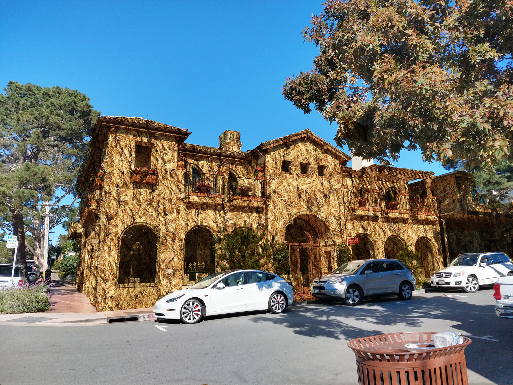

Projects in Photoshop
Layout
I made this cover in the likeness of an Australian magazine. I converted it into an American travel magazine. On the cover, I put a photo that I took while traveling in San Diego. I put different fonts on the cover and used my topics.

Texture Composites
For this 2 projects I created a texture with an image. I blended the texture with the background and masked it.
